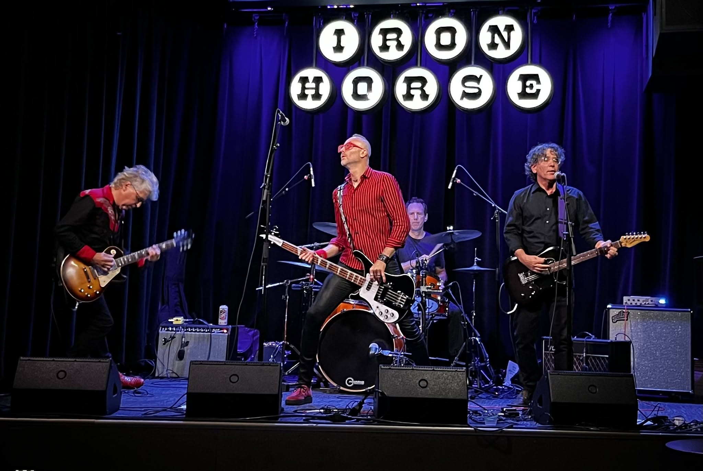

Bio
Les Dérailleurs
Les Dérailleurs emerged from the Western Mass DIY scene in 2016 and have been entertaining audiences with their energetic live sets in venues across the Valley ever since.

Band Bio
Les Dérailleurs are Dan Cooper (guitar), Joe Pater (vocals, guitar), Jeremy Smith (drums), and Frank Sinistra (bass).
They have opened for Wolf Parade and Bush Tetras, and have often shared the stage with fellow Western Mass bands Perennial and Bunnies, amongst others — see the Shows page.
Their sound has been described as "blazing guitars and a taut rhythm section" with "expressive, catchy" vocals (Eric Danton).
Their first full length album, recorded in collaboration with Mark Alan Miller (Dinosaur Jr., New Radiant Storm King) is set to be released in the fall of 2026.